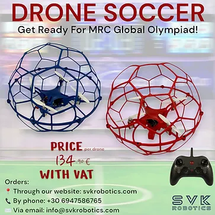
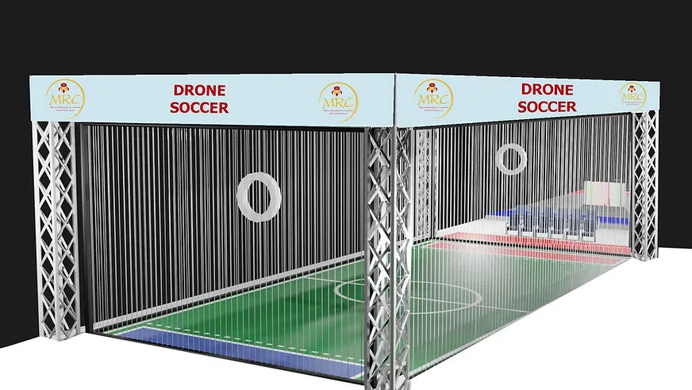
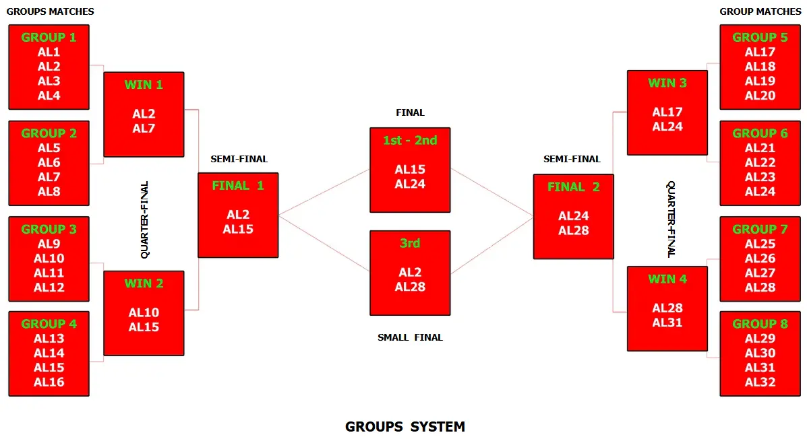
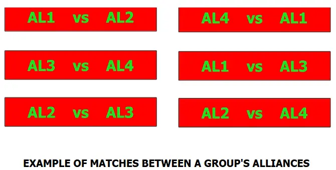

Here is the Traditional Chinese translation of the document, structured clearly with maintained markdown formatting and image placeholders:
---
兒童組 (KIDS)：10 至 12 歲 / 國小學生
青少年 / 高級組 (TEENS / SENIOR)：12 歲以上至 18 歲 / 國中與高中生
成人組 (ADULTS)：18 歲以上 / 大專院校學生及社會人士
⚠️ 本項目僅設有一個競賽級別：
本運動項目需要使用特定型號的無人機機器人。詳細規格於規則中說明。
🚨 各年齡組別分開進行比賽。
⚠️ 零號規則 (RULE ZERO) – 零容忍與常識：
在所有體育運動中，皆適用零號規則，內容如下：
➤「如果您不確定某件事是否被允許，那它大概就是不被允許的。」
所有規則均基於常識、運動精神以及所有參賽者的安全。
任何故意曲解規則、違反規則本意，或試圖利用灰色地帶以獲取不公平優勢的行為，皆絕不姑息，並可能導致隊伍被取消比賽資格。
🎯 賽事目標
由 3 顆無人機足球組成的聯盟（聯盟：3 隊組合成 1 隊，即 3x3 足球），其目標是在對手面前盡可能攻入最多的進球。
👥 隊伍 – 教練
* 本賽事為團體賽，非個人賽。
* 每支隊伍可由二 (2) 至三 (3) 名成員組成。
* 每隊必須指定最多一 (1) 名「機器人運動員技術員」。僅技術員獲准進入等待區或比賽區域。其他隊員可在操控點後方觀看比賽。
* 隊伍可在每次上場嘗試前更換指定的技術員，以讓所有成員都有機會積極參與運動，但此非強制性。
* 所有隊員必須年滿 10 歲（相當於國小四年級或以上）。
* 隊伍教練必須年滿 20 歲。
* 為確保賽事順暢進行，教練每報名 3 支隊伍，就必須配備 1 名助理。
* 每支隊伍僅限擁有一顆無人機足球。比賽期間禁止更換無人機足球。
* 各隊之間不得共用同一顆無人機足球。
* 若隊伍的無人機足球遇到嚴重技術問題，僅可在獲得主裁判許可後進行更換。
🤝 聯盟 (ALLIANCES)
* 一個聯盟由 3 支隊伍組成。每支隊伍僅限擁有一顆無人機足球。
* 每場比賽中，由 2 個對立聯盟進行對決。
* 報名期結束後，系統將決定聯盟組合，主辦委員會將透過電子郵件通知各隊。
* 比賽期間，聯盟將被稱為「聯盟 1」、「聯盟 2」等。教練必須確保隊伍在比賽開始前清楚知道自己所屬的聯盟。
* 若有隊伍在比賽當天未出席，該聯盟將以 2 支隊伍出賽。若同一聯盟有 2 支隊伍未出席，該聯盟僅存的隊伍將直接出賽，不另行補齊缺席隊伍。
* 若聯盟因任何原因被取消比賽資格，無論發生在比賽的哪個階段，對手聯盟皆直接獲勝。
🛸 無人機足球類別
* 比賽使用的是帶有球形防護外殼的無人機。
* 無人機足球必須與下方連結中的型號相同，隊伍必須自行準備。
點此購買您的無人機足球 ([https://svkroboticstore.com/products/soccer-drone-blue](https://www.google.com/search?q=https://svkroboticstore.com/products/soccer-drone-blue))

🛸 無人機足球規格
🚨 本賽事僅能使用指定型號的無人機足球。⚠️ 警告：不接受任何其他選項。
* 遙控器：無人機足球必須使用遙控器進行操作。
* LED 燈光：每顆無人機足球必須配備燈光，且必須能發出至少兩種顏色（紅色與藍色），以便每個聯盟擁有自己的代表色，方便裁判在比賽中輕鬆識別球員。
* 尺寸與重量：無人機足球的尺寸必須為 20cm x 20cm x 18cm（誤差 range ±1cm），且重量不得超過 140 公克。
* 規格確認：為確認符合上述規格，無人機足球將進行稱重，且必須能順利放入檢查箱中。
* 檢查箱尺寸：20cm x 20cm x 18cm，公差為 ±1cm。
* 無人機足球必須能在不施加壓力的情況下放入檢查箱。
* ➤ 備用電池：隊伍必須準備至少一顆備用電池，以確保比賽順暢進行不延誤。
🧪 技術檢查
* 首次技術檢查將於比賽當天在主辦單位規定的地點和時間進行。
* 技術檢查包括依上述條件對無人機足球及遙控器進行檢查。若不符合規格，將不被允許參賽，並自動取消參賽資格。
* 在技術檢查期間，將發放聯盟於其機器人足球員上使用的「徽章」。
* 若隊伍未在初次檢查時到場，將導致該隊自動被取消比賽資格。
* 初步檢查完成後，無人機足球將獲頒其唯一的 ID 編號。
* 每場比賽前，副裁判亦會進行二次技術檢查。
* 比賽過程中，若裁判判定無人機足球違反或未達到規定規格，裁判有權立即取消其參賽資格。
➤ 賽道尺寸：賽道為長方形，尺寸為 4 公尺 x 6 公尺。
賽道圍欄：出於安全考慮，賽道四周圍繞著護網。
球門：球門由兩個直徑 80 公分的圓環組成，懸掛於天花板，距離賽道牆面 60 公分。
➤ 賽道地面：賽道地面中央帶有類似足球場的劃線標記。球門區呈長方形（紅色或藍色），尺寸為 4 公尺 x 70 公分。

🏆 賽事競賽
📋 一般資訊 - 規則
🤝 聯盟角色分工
比賽前，每個聯盟須為其三顆無人機足球指定以下三種角色之一：
* 後衛 (Defender)
* 前鋒 (Attacker)
* 金球無人機 (Golden Ball Drone)
每個聯盟必須在比賽開始前向裁判申報其角色分配。
📝 角色職責
➤ 金球無人機：只有金球無人機可以得分。唯有當此無人機足球穿過球門圓環時，才算進球得分。
➤ 後衛：後衛的職責是阻擋對手聯盟的進攻。後衛不得在球門環前停留超過 3 秒。否則，該隊將受罰，該後衛無人機將在該場比賽剩餘時間內被勒令出場。
➤ 前鋒：前鋒負責協助金球無人機進行進球。
⚽ 進球判罰
唯有當「金球無人機」完整穿過對手的球門圓環時，方算進球成功。
📊 計分方式（小組賽階段）：
* 每勝一場：得 3 分
* 每平局一場：得 1 分
* 每敗一場：得 0 分
🏟️ 半準決賽、準決賽、季軍賽與決賽階段：
* 每個小組中積分最高的聯盟晉級半準決賽。
* 若有兩個或以上的聯盟積分相同，則以所有小組賽中總進球數最多的聯盟晉級。
* 若仍平手，則以所有小組賽中失球數最少的聯盟晉級。
* 若依舊平手，將進行PK大賽（點球大戰）。每個聯盟將有 1 分鐘的時間，盡可能多地將球攻入/穿過對手的球門環。進球/穿過次數最多的聯盟晉級下一階段。
🔄 技術員更換時間
在一組比賽之間，每個聯盟將獲得 1 分鐘的時間。在這 1 分鐘內，隊伍若有需要可更換技術員。若新技術員未在 1 分鐘內到達，則由原技術員繼續參加下一場比賽。
⏱️ 比賽時間
* 比賽總時長為 4 分鐘。
* 不設中場休息。隊伍在整整 4 分鐘的比賽中累計進球數。
* 比賽期間時間連續計算，計時器絕不中途計停。
* 當無人機未在場上比賽時，隊伍可對其無人機足球員進行調整與修正。
* 每場比賽前，無人機足球都必須接受裁判進行的技術檢查。
⚠️🛠️ 比賽準備與限制
* 比賽開始時，無人機足球需放置於球場地面的紅色或藍色區域內（依據各聯盟的代表色而定）。
* 比賽隨裁判哨音開始。所有無人機足球必須在裁判吹哨後方可起飛。
* 若聯盟進球得分，裁判記錄分數，比賽時間不中斷。
* 若部分無人機足球卡在一起，裁判可指示無人機足球著陸並重新開始比賽。
* 若裁判判定無人機足球意圖故意破壞對手的無人機足球，將舉出「紅牌」。在此情況下，該無人機足球將被驅逐出場，聯盟以 2 顆無人機足球繼續比賽。裁判會要求該無人機技術員將其著陸並關閉電源，期間比賽不中斷。
* 防守方聯盟的任何無人機足球，嚴禁故意停留在球門前，或平行於球門線移動超過 3 秒。若裁判判定有此情形，該無人機足球將被驅逐出場，聯盟繼續以 2 顆無人機足球比賽。
* 裁判的判決為最終判決。對判決有異議僅能向主裁判（Head Judges）提出。質疑主裁判的最終裁決可能導致隊伍或聯盟被取消參賽資格。
🩹 無人機足球故障/損壞 (INJURY)
➤ 發生以下情況時，裁判將判定無人機足球為「故障/損壞」：
* 其零件已脫落/解體。
* 保持靜止不動（與遙控器失去連線）。
* 損壞的無人機足球將留在比賽場地的地面上，直至 4 分鐘比賽結束。隊伍可在比賽結束後維修其無人機足球，以便參加下一場賽事。
* 若某聯盟的所有無人機足球均損壞且無法繼續比賽，裁判將暫停比賽並給予 10 分鐘的維修時間。10 分鐘過後比賽將恢復進行，即使只有一顆無人機足球回到場上亦同。在此情況下，另外兩名隊員不得進入場地。
📅 競賽流程
* 競賽採「小組賽制」進行，如下方圖片範例所示。
* 小組排名將於比賽前 10 天由系統完成，並通知所有隊伍遵循。
* 分配至各小組的協同組合（Synergies/Alliances）數量以及小組內的對戰場數，將根據參加該項目的隊伍數量進行調整。
* 籌委會有權根據隊伍數量調整賽事形式，以確保賽事最佳運作。


小組內聯盟對戰範例
🟥 隊伍取消資格
在下列情況下，隊伍將被取消該項目的參賽資格並必須退出比賽。該隊的成績將不予計算，亦不列入賽事成績榜單中：
1. 若隊伍的無人機足球不符合競賽規則規定的要求，且隊伍拒絕進行配合修正。
2. 若任何無人機足球技術員行為不當、不尊重他人、謾罵、挑釁，或在言語及其他方面攻擊隊友或裁判。
3. 若隊伍的教練（即使只有一位）行為不當或不體面、謾罵、挑釁，或在言語及其他方面攻擊其他隊伍、隊友或裁判。
4. 上述運動規則中所列出的違規情況。
✅ 允許 / ❌ 禁止事項
✅ 允許事項：
* 在比賽之間頻繁更換電池是必要的，以確保無人機足球始終處於隨時可作戰狀態。
❌ 禁止事項：
* 對無人機足球進行任何形式的改裝。
* 使用與賽事推薦及原廠配備不同的馬達。
* 改裝遙控器。
* 上述規則中列出的禁止事項。
🏆 獲獎者
依據最終積分，每個年齡組別將頒發並宣布獲得以下名次的聯盟：
🥇 冠軍 (第 1 名)
🥈 亞軍 (第 2 名)
🥉 季軍 (第 3 名)